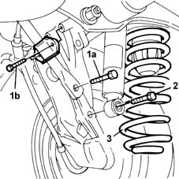

4420A40 l/h or r/h rear suspension coil spring (one) - r+r
- Path
- Procedures > 44 SUSPENSION AND WHEELS > 4420 REAR SUSPENSION > 4420A rear dampers and springs > 4420A40 l/h or r/h rear suspension coil spring (one) - r+r
- Kind
- repair procedure (removal / refitting; the operation number is the code)
- Applies to
- all engines; all production periods
- Interactive page
- https://sloeber94.github.io/elrnDB-fMltpl/en/#/2891720
Applies to: all engines; all production periods
 Removing
Removing
 Refitting
RefittingPosition the vehicle on a lift and raise it.
Partly compress the suspension using a hydraulic jack.
Move the mounting bracket for the handbrake cable and the brake pipes aside, undoing the bolt fixing it to the track control arm, in order to facilitate access to the anti-roll bar.
1. Undo the bolt (1a) fixing the anti-roll bar to the track control arm and the bolts (1b) for the U-bolt.
2. Undo the lower nut fixing the shock absorber to the track control arm.
Remove the hydraulic jack.
3. Remove the rear coil spring.

Applies to: all engines; all production periods
Refitting
RemovingFita the rear coil spring, positioning it correctly between the upper support and the track control arm.
Partly compress the suspension using a hydraulic jack.
Tighten the lower nut fixing the shock absorber to the track control arm to torque.
 | Fastening | Component | Ø | Value (daNm) |
|---|---|---|---|---|
- | Nut | REAR DAMPER ATTACHMENT | M12 x 1.25 | 8.8 |
Tighten the bolt fixing the anti-roll bar to the track control arm to torque.
| Fastening | Component | Ø | Value (daNm) |
|---|---|---|---|---|
- | Bolt | REAR ANTI-ROLL BAR | M10 x 1.25 | 5.6 |
Tighten the bolts for the U-bolt securing the anti-roll bar to the track control arm to torque.
| Fastening | Component | Ø | Value (daNm) |
|---|---|---|---|---|
- | Bolt | REAR ANTI-ROLL BAR | M8 | 3 |
Remove the hydraulic jack.
Reposition and tighten the bolt for the mounting bracket securing the handbrake cable and the brake pipes to the track control arm to torque.
| Fastening | Component | Ø | Value (daNm) |
|---|---|---|---|---|
- | Bolt | HANDBRAKE LINKAGE MOUNTS | M8 | 2.5 |
Lower the left and remove the vehicle.